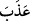
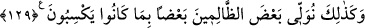

kaldıramaz. Biz onlardan bir nebzesine işaret ediyoruz ve sâliklerden başkasından
gizlenmesini tavsiye ediyoruz.
Ramazan Efendi, Şerhu’l-Akâid adlı eserinde şöyle der: Bil ki, cehennem ehli
oradan kurtulma ümidini yitirmezler. Ta ki cennetle cehennem arasında ölüm koçu
boğazlanıp cennet ve cehennem ehline bulundukları yerde ebediyyen kalacakları ilân
edilince artık oradan kurtulmaktan ümitlerini keserler. Azaba öyle alışırlar ki ondan
zevk alır hale gelirler. Hatta üzerlerine cennet kokusu dökülse onu kötü görürler ve
ondan acı çekerler. Gübreyi güzel bulup, gül kokusundan rahatsız olan pislik böceği gibi
olurlar.
Bu izah Şeyh-i Ekber (k.s.)’un söyledikleri ile aynı anlamdadır: “Cehennem boş
halde kalır. Çünkü azab kelimesi, (
) “tatlı olmak” kökündendir.” Ancak Şeyh-i
Ekber’in bu sözünün zahiri anlamı seni aldatmasın. Çünkü, zâhir ve bâtın âlimleri
cehennemde ebedi kalacak olanın oradan çıkmayacağı ve onun cesedinden cehennemin
boş kalmayacağı hususunda ittifak etmişlerdir.
Dînî kemâlâtdaki özel yeri ile Allah’ın âlemlere lütfettiği Şeyhimiz Efendimiz
hazretleri şöyle demiştir: “Cemal yurdu olan cennet ehli, oraya yerleştiğinde
üzerlerinde cemâlin eseri görülür, ebedi ve daimi olarak zevk alırlar, cemâlin celâli ve
eseri onlardan gizli kalır. Onu hissetmezler, görmezler, ebediyyen ve asla ondan elem
duymazlar. İşte celâl yurdu olan cehennem ehli de oraya yerleşip aradan uzun yıllar
geçince bâtınlarında celâlin cemâlinin izleri zuhur eder. Ebedî olarak ondan zevk
alırlar. Celâl ateşinin eseri kendilerinden gizli kalır. Öyle ki onu hissetmezler,
görmezler ve ebediyyen acı duymazlar. Bu hal ancak, ateşin onların içlerini ve dışlarını
yaktıktan uzun günler ve yıllar sonra olur.
Bir kimse, dünyâdaki bir günlük şirki için âhiret senelerinden elli bin sene yanar.
Yıllar geçtikçe onların üzerinde görünen, kendilerinde ebediyyen devam eden hâldir ki
bu da onların ezeldeki halleridir. Ezel ve ebed arasındaki haller rahmânî imtihanlardır.
İmtihan ise hâdistir. Nitekim Allah Teâlâ şöyle buyurur: “Biz sizi sınamak için, şerre
de hayra da müptelâ kılıyoruz ve bize döndürüleceksiniz.” (el-Enbiya, 21/35) Allah,
bizi ve sizi helâk yurdu olan cehennemden korusun. Burada Şeyh Atpazarî’nin sözü son
buldu.
“Şüphesiz Rabb’in” fiillerinde “hüküm ve hikmet sahibidir.” Şeytanın dostlarını
ebediyyen cehennemde bırakması da O’nun hikmetli işlerindendir. O, “her şeyi”
insanların ve cinlerin her türlü hallerini, yaptıkları işleri ve bunlara karşılığın ne
olduğunu “çok iyi bilendir.”
129. İşte böylece işledikleri günahlardan ötürü zalimlerin bir kısmını diğer bir